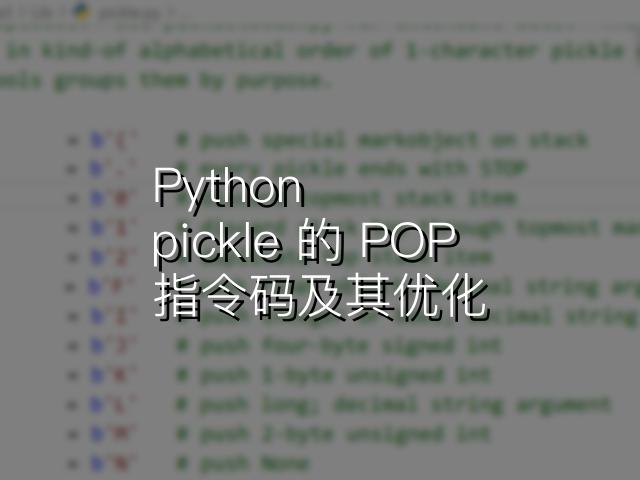

 Python Python pickle 的 POP 指令码及其优化 今天收到知乎私信，问 pickle 虚拟机中的 POP 指令码有什么用。重新读了一遍源码，解决了这个问题，并对 memo 有了新的认知。
machine learning LeNet：第一个卷积神经网络 LeNet 是 Yann LeCun 等人在上世纪 90 年代提出的网络模型，用于手写数字的识别。本文介绍了该模型，并提供 PyTorch 实现。
Crypto 格密码笔记（四） 本文正式开始对 lattice 的讨论。我们给出了 lattice 的代数定义和几何定义，并讨论了 lattice 的基、基变换、基本域、协体积等概念，并给出了特殊条件下求协体积的算法。